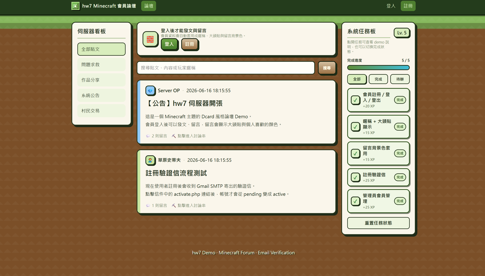
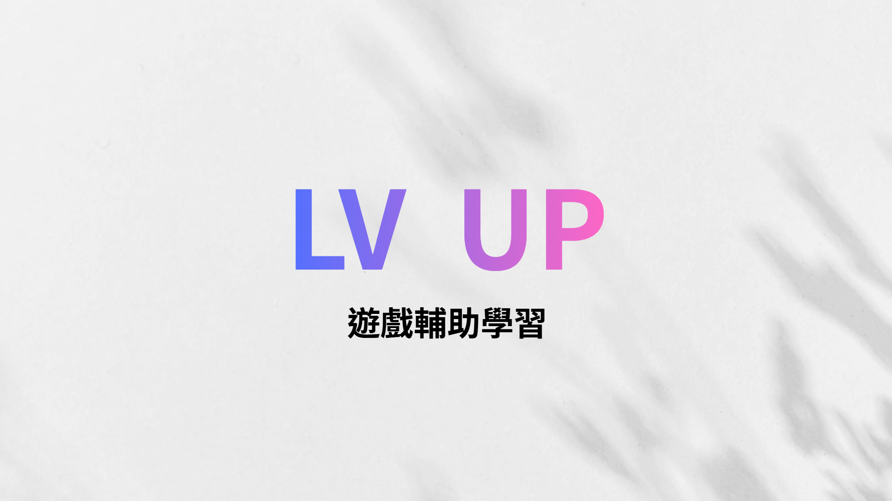

你好！我是李庭，目前就讀於聯合大學資訊管理學系，平時除了上課之外，下課之後我也有打工，其他時間我會去跑步、打球，另外對財經和攝影也有興趣，所以也有在投資台股與美股。
目前沒有相關經驗，待日後更新...
C++程式語言
HTML網頁設計
資料庫管理
資料庫程式設計
以下展示我在學期間參與的獨立與團隊專案。

使用網頁前端技術與資料庫管理，打造一個包含會員註冊、留言互動的專屬遊戲討論平台。

結合「LV UP 遊戲輔助學習」概念，設計出能提升使用者學習動機與參與度的創新專案。
我認為隨著生成式 AI、自動化工具與雲端技術的爆發，過去在課堂上學到的單一程式語言或開發框架， 可能在短短幾年內就會面臨貶值甚至淘汰的風險，面對這些挑戰我認為資管人不該盲目且焦慮地追趕所有最新技術， 而是要建立系統性思維，學會在技術與商業的夾擊中保持彈性。